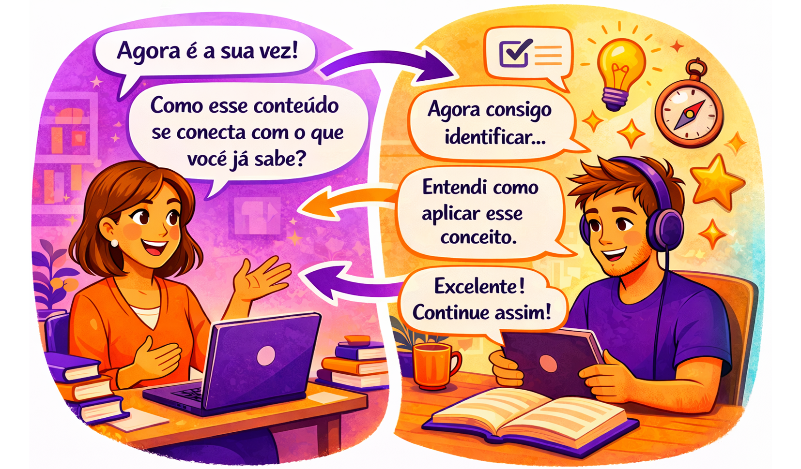
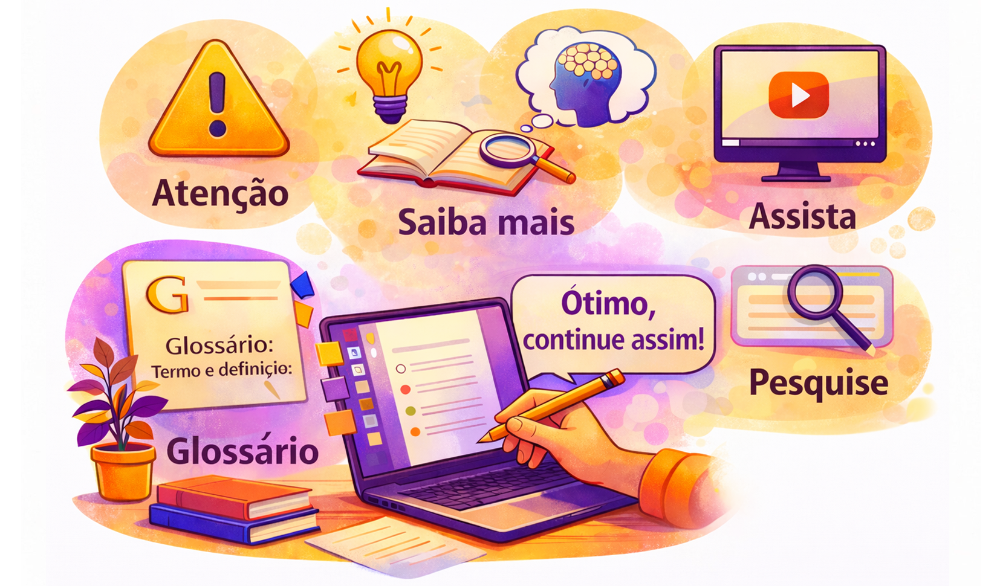
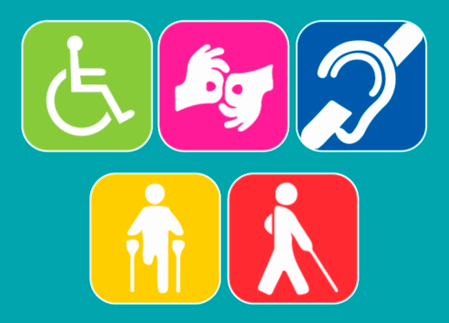
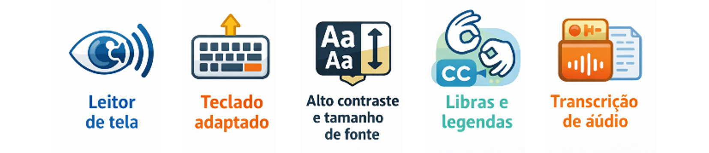
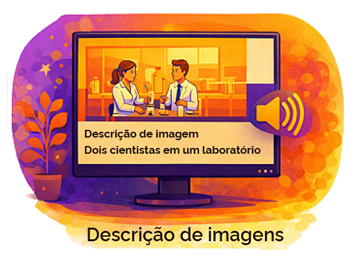
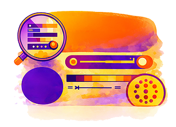

Compreender a
importância da acessibilidade nos
recursos em EaD.
Reconhecer a
linguagem utilizada na produção de
textos para EaD.
Conhecer os
elementos mediadores do material
didático na produção de textos para
EaD.
Apresentar
exemplos de recursos instrucionais
que ajudam no processo de ensino e
aprendizagem.
Conhecer os
recursos que podem ser aplicados na
produção do material didático para
EaD.
A linguagem utilizada no
EaD
O
que fez você se sentir mais engajado: o conteúdo
ou a forma como ele foi apresentado?
Como
já vimos, o conteúdo na Educação a Distância
(EaD) é fundamental para a construção do
conhecimento e para a comunicação com o aluno;
no entanto, o material deve ser produzido
considerando-se mais do que apenas o currículo
de um curso.
Afinal,
as informações são de fato compreendidas pelos
estudantes somente quando a comunicação é
adequada ao meio de transmissão e ao
público-alvo. É por isso que seguir a linguagem
dialógica é regra em EaD.
E
o que é essa linguagem dialógica?
Vamos
pensar juntos? A linguagem dialógica — seja
escrita, visual ou audiovisual — é uma forma de
comunicação muito usada em EaD. Ela nasce da
união entre o conceito de linguagem, entendida
como a capacidade humana de expressar
sentimentos, desejos, opiniões e informações em
diferentes culturas, e o conceito de
dialogicidade, que envolve construir e refletir
por meio do diálogo. Nessa perspectiva, a
interação é o caminho pelo qual o conhecimento é
construído, já que a linguagem funciona como um
meio que aproxima o sujeito do objeto de estudo.

Fonte: Gerada
por inteligência artificial - DALL-E
(2026).
Na
produção de materiais didáticos, utiliza-se a
chamada Linguagem Dialógica Instrucional. Por
meio dela, os professores conteudistas organizam
o conteúdo como se estivessem conversando
continuamente com o aluno, mantendo um tom
acolhedor e motivador. Esse diálogo inclui
orientações sobre o que fazer e busca sempre
incentivar, fortalecer e apoiar o estudante
(Laaser, 1997).
Agora
reflita: o seu material atual conversa com o
estudante ou apenas informa?
Ao
reconhecer que a linguagem é um elemento que
motiva e sensibiliza o aluno, o professor que
elabora o material deve priorizar um modo de
escrever claro e direto. Pode usar verbos no
imperativo, desde que isso não soe como
imposição ou agressividade.
Importante
A linguagem dialógica é o elemento que
cria a interação direta entre o professor
(ou qualquer outro docente que utilizar
o mesmo material) e o estudante,
aproximando o aluno tanto do conteúdo
quanto do responsável pelo componente
curricular.
Então,
como inserir a linguagem dialógica no conteúdo
para EaD?
A
linguagem dialógica usa palavras que indicam
interação. Por exemplo, em vez de escrever
“Semiótica e suas aplicações” em um material
didático ou ambiente virtual de aprendizagem
(AVA), os autores podem optar pela seguinte
alternativa:
“Olá!
Meu nome é Irene. Durante esta atividade eu vou
explicar para você o conceito de semiótica e em
quais situações do dia a dia ela pode ser usada.
Vamos lá? Clique no botão Seguir para começar.”
Também
é possível usar frases como:
“Você deve estar se perguntando: e o que
eu faço com isso?”
“Não se preocupe, vou te ajudar a
entender.”
No artigo “Linguagem Dialógica
Instrucional: a (re)construção da
linguagem para cursos online”, os
autores dão dicas sobre a produção de
conteúdos escritos e falados usando a
linguagem dialógica.
Usar sentenças curtas e evitar as
compostas.
Evitar excesso de informações em cada
frase.
Usar voz ativa e pronomes pessoais.
Manter itens iguais ou equivalentes em
paralelo e listar as condições
separadamente.
Usar exemplos familiares ao
público-alvo.
Escrever de forma similar à linguagem
falada.
Evitar jargões e palavras difíceis e
desnecessárias.
Utilizar termos técnicos somente quando
necessário e, se possível, acompanhados
de explicações.
Colocar as sentenças e parágrafos em uma
sequência lógica: primeiro as coisas que
sensibilizam ou são contextualizadas por
muitos e depois as que contam com baixa
sensibilização e contextualização;
primeiro o geral, depois o específico;
primeiro os conceitos permanentes,
depois os temporários.
Outro
material útil para aprender a inserir a
linguagem dialógica e o dialogismo nos conteúdos
do ensino a distância é o Manual do Dialogismo
sobre o tema elaborado pela Uniasselvi em 2019.
O documento instrui os autores a:
Escrever textos simples e sem
complexidade, porém não simplórios.
Usar citações, alusões e desenvolver a
estilização, mas sem perder a essência e
a sua personalidade de produtor textual.
Inserir nas referências somente as
fontes efetivamente usadas.
Saiba mais
Consulte o Manual do
Dialogismo nas páginas 10 a 14
para conferir exemplos de como aplicar
dialogismo na produção de textos.
Sem
interações presenciais, a linguagem dialógica é
a principal ferramenta de interação entre o
professor e os alunos em boa parte dos cursos.
Por meio dela é que o fio condutor da explicação
do conteúdo se desenrola, por isso ela deve
estar em profunda sintonia com as realidades
vividas pelos estudantes, incluindo a forma de
apresentação do conteúdo.
No
artigo “A utilização da linguagem na elaboração
do material didático para a EaD” as autoras
Percilio e Oliveira (2018) chamam a atenção para
a utilização de alguns elementos mediadores
entre o estudante e o conhecimento a ser
transmitido, conforme tabela a seguir.
A
linguagem, portanto, exerce esse papel mediador
e deve ser objeto de atenção na produção do
material didático. Ao produzir o seu texto, você
considera apenas o conteúdo ou também a forma
como ele mobiliza o pensamento do estudante?
Observe os elementos a seguir e avalie o seu
próprio material.
Elementos mediadores
do material didático a serem
observados na produção do texto
Elementos de linguagem e
compreensão
O estilo do texto deve ser
dialógico, com linguagem
adequada ao seu público-alvo, no
que diz respeito à idade e nível
de escolaridade, e que permita
clara percepção de seu objetivo.
Elementos estruturantes
O texto deve guardar coerência e
coesão entre seções e conteúdos.
Elementos motivadores e
problematizadores
O texto deve ser um incentivador
ao processo metacognitivo,
estimulando pensamento e
questionamento. É nesse processo
que a aprendizagem pode ser
concretizada de forma
significativa.
Elementos de hipertextualidade e
contextualização
Textos não lineares que propõem
explicação dos termos aos quais
se referem.
Elementos reforçadores da
aprendizagem
Devem ser utilizados exemplos,
metáforas e analogias que
viabilizem uma melhor
compreensão do tema abordado. A
escrita deve ser dinâmica, com
utilização de mapas, charges,
tabelas, sempre relacionadas ao
texto, bem como conter indicação
de bibliografias, sites, vídeos.
Fonte: UFPR (2020).
Os recursos
instrucionais
Os
recursos instrucionais são todas as ferramentas
passíveis de serem utilizadas para complementar
e ampliar o processo de ensino-aprendizagem e
dar suporte à autonomia do estudante. Para
compor o material didático de um curso EaD, é
importante utilizarmos esses recursos, tendo em
vista que chamam a atenção dos estudantes aos
tópicos principais e destacam assuntos que podem
ser explorados para além do material didático.

Fonte: Gerada
por inteligência artificial - DALL-E
(2026).
Com
o objetivo de incentivar o aluno a buscar o
conhecimento de maneira autônoma, sugerimos
alguns recursos instrucionais entre os vários
existentes.
Intenção
Recurso instrucional
Descrição
Destaque
Atenção
Destaque para algum aspecto ou
ponto do texto principal.
Reflexão
Reflita
Provocação para que o leitor se
sinta instigado a refletir sob
um outro prisma o tema em
estudo.
Informação
Complementar
Saiba Mais
Informações complementares ou
curiosidades a respeito do tema
em estudo.
Glossário
Esclarecimento de termos e
conceitos.
Assista
Indicação de vídeos
explicativos, entrevistas,
palestras que aprofundem o tema
em discussão.
Pesquisa
Pesquise
Comentários com alguma indicação
sobre como o tema estudado pode
se desdobrar em outros
caminhos.
Fonte: UFPR (2020).
Qual
desses recursos você utiliza com mais
frequência?
Acessibilidade dos
materiais didáticos
Saiba mais
A Lei Brasileira de Inclusão da
Pessoa com Deficiência (Lei nº
13.146/2015), a LBI, Art. 27. A
educação constitui direito da pessoa
com deficiência, assegurados sistema
educacional inclusivo em todos os
níveis e aprendizado ao longo de toda
a vida, de forma a alcançar o máximo
desenvolvimento possível de seus
talentos e habilidades físicas,
sensoriais, intelectuais e sociais,
segundo suas características,
interesses e necessidades de
aprendizagem (BRASIL, 2015).

Seja
qual for a escolha do docente sobre a
linguagem ou o modo de utilização para
dinamizar suas aulas, comunicação
interpessoal, comunicação escrita ou
comunicação virtual, é preciso que haja
acessibilidade comunicacional, isto é, que
não existam barreiras para a boa comunicação.
A
Fiocruz lançou em 2023, o Guia de
Acessibilidade para as Ações Educativas da
Fiocruz, que tem o objetivo de subsidiar as
unidades técnico-científicas da instituição
na implementação de uma política interna de
promoção da acessibilidade em seus cursos e
iniciativas de educação.
De
modo geral, sempre que possível e/ou quando
necessário, todos os materiais e atividades
dos componentes curriculares de um curso com
carga horária — parcial ou integral — em EaD
devem ser acessíveis, a fim de atender a
diversos públicos, favorecendo e gerando
oportunidades para todos.
As
recomendações para atender a essas
diversidades são:

Campus Virtual
Fiocruz, gerado por meio da ferramenta OpenAI
(ChatGPT).
As imagens devem ter descrição, falada ou escrita, garantindo a acessibilidade aos estudantes.
Os arquivos de áudio devem conter uma transcrição descritiva para quem possui dificuldades para ouvir;
Os vídeos devem ter legendas e/ou tradução em Libras.
Devem ser utilizadas tecnologias assistivas, como leitores de tela, versão acessível (Word, bloco de notas e PDF acessível), entre outras.
Deve ser promovido o contraste adequado entre o texto e o fundo da tela, para estudantes com baixa visão, além redimensionamento de textos e imagens para melhoria da leitura;
Disponibilizar uma explicação para siglas, abreviaturas e palavras incomuns: Ao menos na primeira ocorrência de siglas, abreviaturas ou palavras incomuns (ambíguas, desconhecidas ou utilizadas de forma muito específica), deve ser disponibilizada sua explicação ou forma completa. Essa explicação pode estar expressa no próprio texto, pode estar presente em um glossário ou, então, através da utilização do elemento abbrO elemento <abbr> é uma tag do HTML usada para marcar abreviações ou siglas dentro de um texto..
Descrever links clara e sucintamente: Deve-se identificar claramente o destino de cada link, informando, inclusive, se o link remete a outro sítio. Além disso, é preciso que o texto do link faça sentido mesmo quando isolado do contexto da página.
O elemento <abbr> é uma tag do HTML usada para marcar abreviações ou siglas dentro de um texto.


Fonte: Gerada
por inteligência artificial - DALL-E
(2026).
Revise
seu último material produzido: ele atende a
esses critérios?
Você chegou ao final
da terceira aula do
Módulo 2
Nesta
aula você compreendeu que a linguagem dialógica
é um princípio essencial em Educação a Distância
(EaD). Ao valorizar a comunicação e a interação
entre estudante e conteúdo, essa abordagem
favorece o engajamento, estimula a reflexão e
contribui para o sucesso dos cursos online.
Entendeu
que, na linguagem dialógica, o conteudista
constrói o material como um diálogo com o aluno,
utilizando uma escrita clara, acolhedora e
encorajadora, que aproxima o estudante do
conhecimento.
Também
conheceu recursos instrucionais que auxiliam na
organização do conteúdo de forma lógica,
atrativa e coerente, incentivando a
aprendizagem autônoma.
Além
disso, reconheceu a importância da
acessibilidade em materiais didáticos para EaD,
garantindo que todos os estudantes tenham acesso
equitativo às oportunidades de aprendizagem.
Entre os recursos de acessibilidade que podem
ser utilizados em plataformas digitais,
destacam-se: legendas, audiodescrição,
contraste adequado de texto, ajuste de tamanho
de fonte e compatibilidade com leitores de tela.
Conferindo
a aprendizagem
Questão
1
Objetivo:
Reconhecer a linguagem utilizada na
produção de textos para Educação a
Distância.
A linguagem
dialógica em EaD é essencial porque:
Questão
2
Objetivo:
Conhecer os elementos mediadores do
material didático na produção de
texto para EaD.
Qual dos itens
a seguir é um exemplo de elemento
mediador do texto didático que visa
estimular o pensamento crítico e a
metacognição?